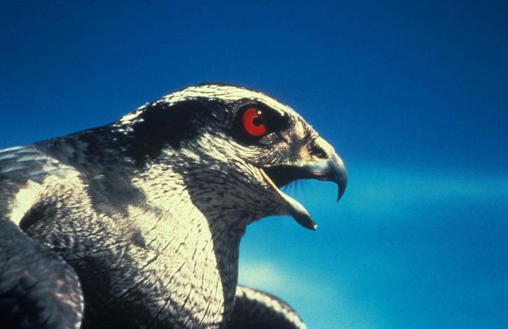

Falcon Gallery
Browse photos of falcons and see their strength and confidence.
What You See in the Gallery
Each photo highlights a different quality of a falcon: speed, observation, calm behavior, and disciplined movement in flight.
Tip: click any photo to open full-screen view.
A falcon does not fight the wind. It reads the wind, then turns it into motion.

Sky Journal Feature
In this visual story, the falcon appears not just as a hunter, but as an architect of motion. Every curve of the wing is a calculation, every dive is a decision, and every return to height is a quiet statement of control.
Field note: Confidence is not noise. Confidence is precision.
Did You Know?
The peregrine falcon is often called the fastest animal on Earth during a steep hunting dive.
Falcons use landmarks, sunlight, and magnetic cues to navigate over long distances.
A healthy falcon population is a strong indicator that local food chains are working well.